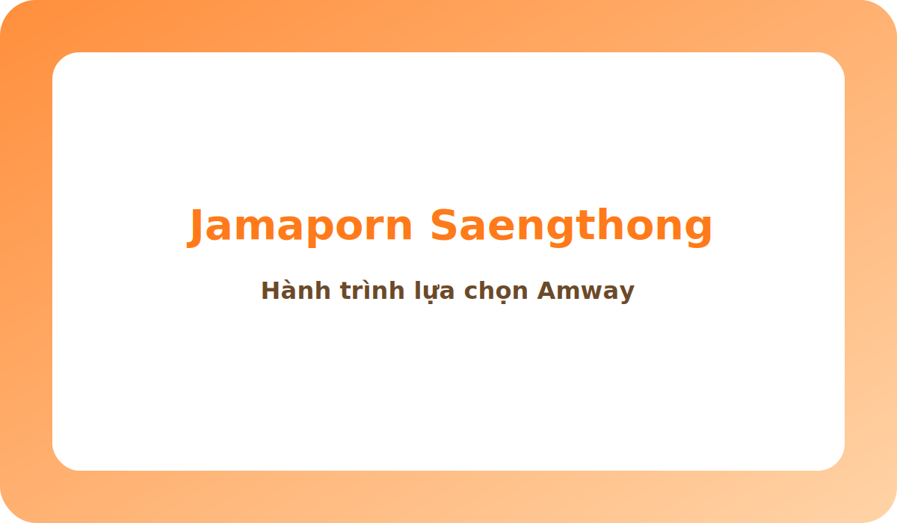
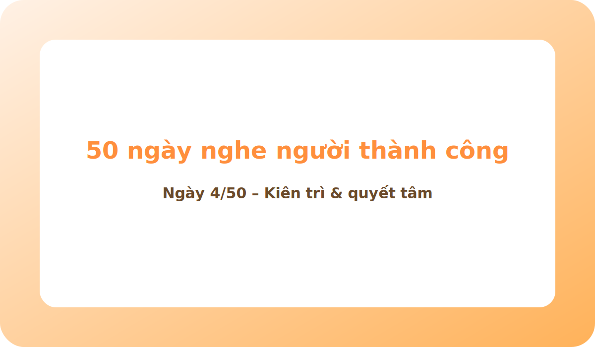
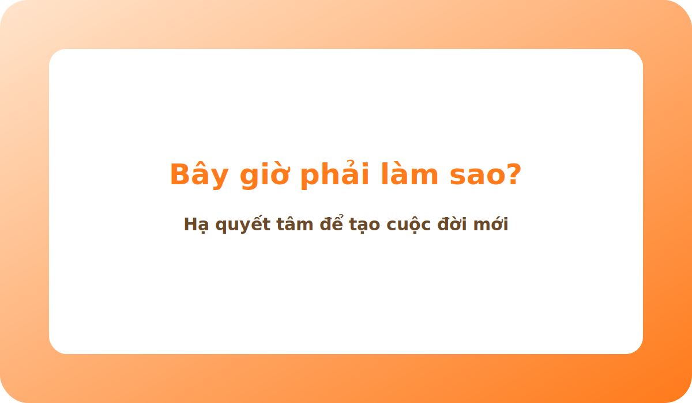

CA SĨ THE VOICE (THÁI LAN) LÀM AMWAY
Cô ấy tên là Jamaporn Saengthong, biết Amway qua Facebook và bắt đầu hành trình của riêng mình.
Hành trình trong kinh doanh Amway:
- Làm 4 tháng đạt Silver (thu nhập 30-50 triệu/tháng).
- 1 năm đạt Founders Platinum (thu nhập #50 triệu/tháng).
- 2 năm đạt Diamond (thu nhập #200 triệu/tháng*).
Và lúc chia sẻ video này, cô đang ở cấp Founders Diamond.
Đầu tiên là LỰA CHỌN. Cuộc đời mình thích với cuộc đời mình muốn không hề giống nhau. Công việc ca sĩ của tôi rất tốt nhưng thu nhập là thu nhập chủ động. Tôi nổi tiếng nhưng luôn phải đi làm. Thành công trong sự nghiệp khác xa so với thành công trong cuộc sống.
Tôi thích kinh doanh Amway vì có cơ hội được chăm sóc bản thân mình. Mà điều đầu tiên để bắt đầu cuộc sống tốt chính là chăm sóc bản thân mình.
MUỐN THÀNH CÔNG CẦN LÀM GÌ? Thông thường khi thay đổi chúng ta hay sợ người khác nghĩ về mình, nhưng nếu chúng ta hạ quyết tâm ở kết quả chứ không phải ở chỗ bắt đầu, thì chúng ta sẽ vượt qua được nỗi sợ và sẽ làm được những việc trước đây chưa từng làm.
Nếu lựa chọn sai công cụ thì cũng không thể có được cuộc sống mình muốn. Và không thể làm người cũ mà muốn có cuộc đời mới, cho nên tôi tập trung thay đổi bản thân rất nhiều.
Kinh doanh này tuyệt vời vì có tuyến trên, có người đồng hành luôn chỉ dẫn cho mình. Khi tôi có em bé bị nghén, phải nghỉ ngơi một thời gian, luôn luôn có tuyến trên và hệ thống hỗ trợ tôi chăm sóc kinh doanh này — điều mà trong công việc truyền thống khó mà có được.
- Muốn thành công phải đánh đổi. Một số người muốn tất cả nhưng không muốn đánh đổi.
- Nếu mình chưa muốn (hôm nay mệt, ngày mai nắng, ngày mốt mưa...) tất cả chỉ là cái cớ. Nếu muốn thì không gì là vấn đề.
- Nếu hình ảnh về một cuộc sống mong muốn trong ta rõ ràng thì chúng ta phải nỗ lực, đánh đổi và hạ quyết tâm, rồi lại nỗ lực, đánh đổi, và hạ quyết tâm, cho tới khi đạt được.